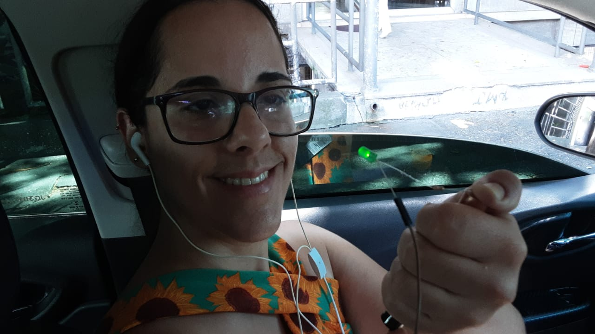

Desde 2013 fazemos parte do corpo docente da escola Estadual Luís dos Santos, Metalúrgico.
Nossa escola foi fundada em 1985 para homenagiar o metalúrgico da empresa Volkswagen, que dividia o seu tempo entre trabalhar na empresa e professor alfabetizador do colegas.

O meu avatar é o Jirachi, uma pokemon que tem a aparência semelhante a uma estrela cadente e realiza desejos, eu o escolhi, pois acredito que no momento que estou vivendo é o que melhor me representa.
Sempre que o meu telefone toca é a minha mãe, pai ou que está ligando ou mandando mensagem fazendo um pedido.
Na automação do avatar o led azul nos olhos representa quando aceso que ele está ativando o seu poder de estrala cadende para realizar o pedido, e quando acende a luz amarela da estrela é o pedido que foi atendido.
O meu avatar é o Wlli Coyote, um personagem de desenho animado que sempre busca inovar com as suas invenções. Embora ele não consiga ter sucesso, ele não desiste nunca, eu me identifico com isso.
Na automação do meu avatar o led amarelo representa o momento em que o Wile Coyoye tem uma nova ideia.
Este video no youtube Fiat 147 piscando farol querendo ultrapassar
Veja também a página da escola: Luis dos Santos